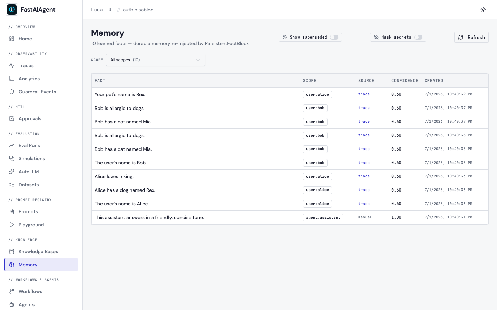
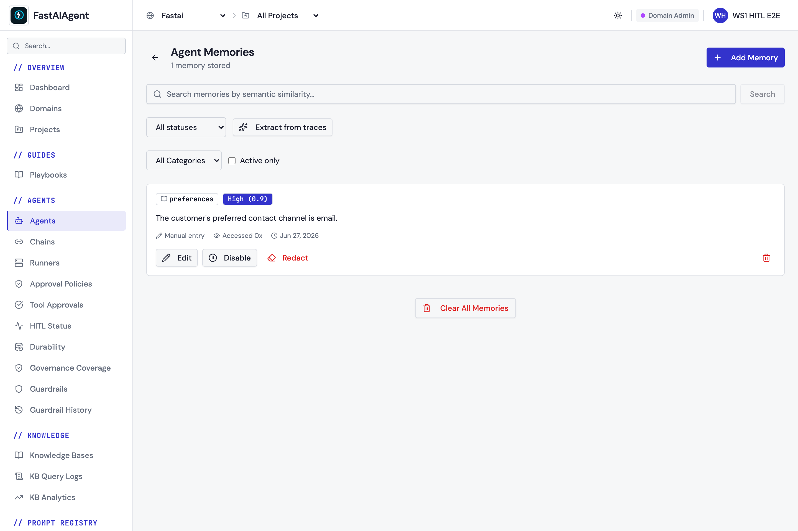
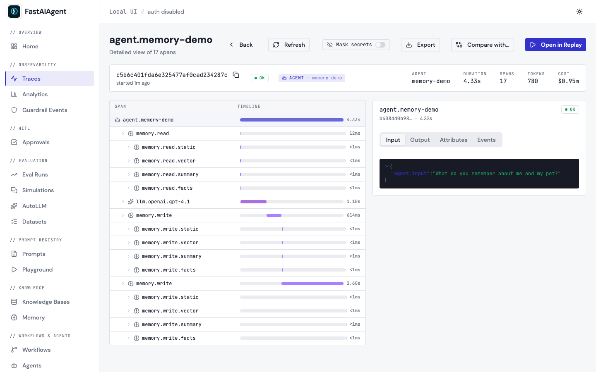
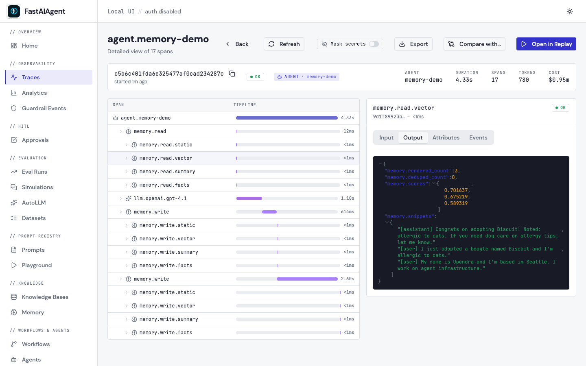
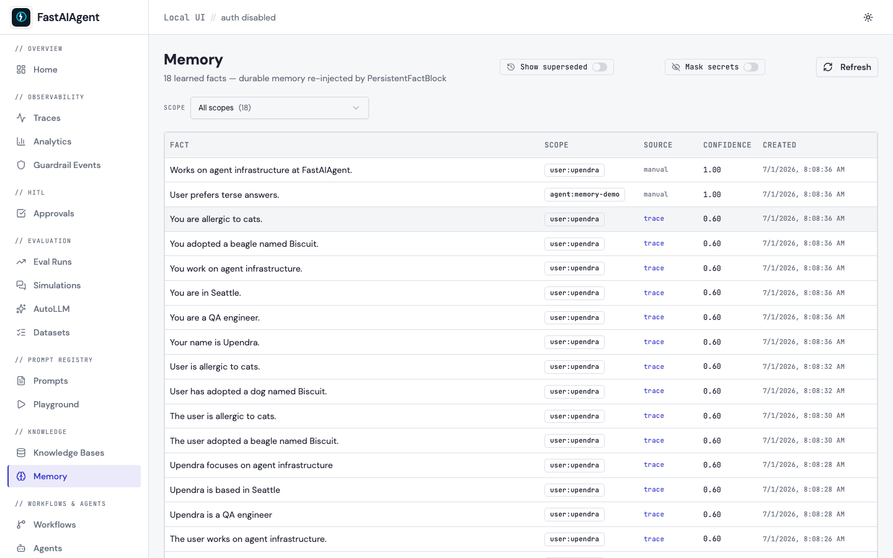
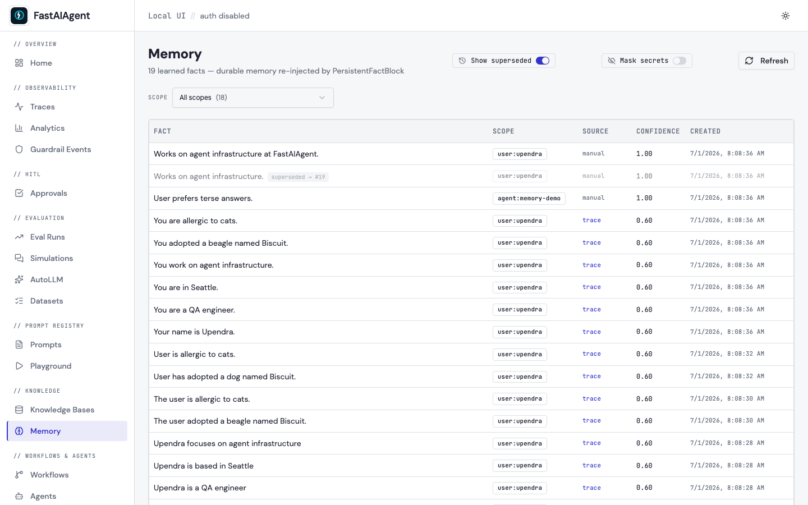

Agent Memory¶
Memory lets agents remember — within a conversation and across sessions. The recommended API is a single object, Memory, with progressive-disclosure keywords. The composable blocks it's built on remain available for advanced/custom behaviours (see Advanced).
Memory — the recommended API¶
from fastaiagent import Agent, LLMClient, Memory
llm = LLMClient(provider="openai", model="gpt-4.1")
# Just remember the conversation:
agent = Agent(name="assistant", llm=llm, memory=Memory())
# Personalize per user, multi-user safe, and learn durable facts:
agent = Agent(name="support", llm=llm, memory=Memory(
user_id=lambda ctx: ctx.state.user_id, # resolved per run — one agent, many users
learn=llm, # extract + persist durable user facts
))
The whole surface is keywords on one object:
| Keyword | What it does |
|---|---|
location |
where durable facts live — "sqlite" (default) or a MemoryStore (external backends are Phase 2) |
user_id |
personalization key — a string or (ctx)->str resolver (per-run, multi-user) |
agent_id |
global tier: facts true for everyone using the agent |
project_id |
tenant partition applied across tiers |
window |
recent turns kept (session/working memory) |
learn |
an LLM → extract + persist durable user facts each turn |
summarize |
an LLM → compress older turns into a running summary |
recall |
"auto" (in-process FAISS) or a VectorStore → semantic recall of past exchanges |
dedupe |
drop recalled content an earlier tier already injected |
Tiers — who a fact is true for¶
global→ true for everyone using the agent (store scopeagent).user→ per-user personalization (store scopeuser; needs an id).session→ the ephemeral conversation window (window) — not a durable store.
Direct store use¶
mem = Memory(location="sqlite")
mem.persist("Return policy is 30 days", tier="global") # create; returns fact id
mem.persist("Prefers email", tier="user", id="alice")
mem.retrieve(tier="user", id="alice") # read → list[Fact]
mem.update("Prefers Slack", old="Prefers email", tier="user", id="alice") # supersede old, keep history
mem.forget(tier="user", id="alice") # delete; returns count
Facts are versioned by supersede, never overwritten — update marks the old row superseded (kept in the audit history, visible under the Memory page's "Show superseded" toggle) and activates the new one. forget hard-deletes (including superseded history for that subject).
Multi-user safety (important)¶
Memory(user_id=<resolver>) isolates each user completely — durable facts and the live session window — by routing to a per-user working memory keyed on the resolved id. One agent definition safely serves many users; a missing/unresolved id yields no personal facts (safe-by-default). Two caveats:
- Per-user working windows are held in-process. Great for dev / single-node; for large-scale or horizontally-scaled multi-user, an external session/fact backend is the Phase-2 path.
recall="auto"builds a per-user in-process vector store. For a shared, production recall store, pass your ownVectorStore(and note it isn't user-partitioned unless you namespace it).
Storage backends (location)¶
Durable facts live wherever location points — the same Memory API, a different backend:
Memory(location="sqlite") # default local.db (single-node)
Memory(location="postgres://user:pw@host:5432/db") # needs fastaiagent[postgres]
Memory(location="redis://host:6379/0") # needs fastaiagent[redis]
Memory(location=my_store) # any object implementing FactStore
All backends implement the same FactStore contract (idempotent add, safe scoping, supersede, delete) and are verified against one shared conformance suite, so behaviour doesn't drift. Use Postgres/Redis for multi-node or many-user deployments; SQLite for dev/single-node. Runnable demo: examples/memory_backends/.
Observability with external backends
Agent runs against any backend emit memory.read / memory.write / memory.persist / memory.retrieve trace spans (browsable in fastaiagent ui). The UI Memory page browses the local SQLite store; facts written to an external backend are observed via those trace spans (a shared UI over external backends is future work).
Semantic recall of facts (semantic)¶
By default retrieve(tier=, id=) returns a scope's facts as a list. Turn on semantic= to retrieve by meaning with retrieve(query, tier=, id=):
mem = Memory(location="sqlite", semantic="auto") # in-process FAISS + default embedder
mem.persist("The user is allergic to peanuts", tier="user", id="alice")
mem.retrieve("what foods should we avoid?", tier="user", id="alice") # → the peanut fact
semantic="auto" builds an in-process vector index sized to the embedder; pass a VectorStore for a shared/production index and embedder= to override. Facts written by learn= are indexed automatically (they share the store). Semantic results honor the same scope isolation and skip superseded facts; the memory.retrieve span records match scores.
Safe-by-default scoping¶
At user/project scope an empty id returns nothing — one user's facts can never leak into another's context. Use scope_id="*" (on the low-level store) to deliberately read across all subjects. The agent/global tier stays permissive (shared truth). (This corrects prior behaviour where an empty user id matched everyone — see the CHANGELOG.)
The Memory page (fastaiagent ui → Knowledge → Memory) shows the tiers side by side — user:alice / user:bob (learned, source trace) and a shared agent:* global fact (source manual):

Reproduce with examples/memory_simple/ (companion.py runs one agent for two users; snapshot.py captures the UI).
Advanced: composable blocks¶
The block API below powers
Memoryunder the hood and remains fully supported for custom behaviours (write your ownMemoryBlock, control ordering, etc.). Most apps only needMemoryabove.
AgentMemory |
ComposableMemory |
|
|---|---|---|
| Since | 0.1.x | 0.4.0 |
| Stores | Sliding window of raw messages | Sliding window plus any number of long-term blocks |
| Best for | Chatbots, short sessions | Long-running assistants, personal memory, fact tracking |
| Drop-in replacement | — | Yes — Agent(memory=...) accepts either |
Sliding-window memory: AgentMemory¶
from fastaiagent import Agent, LLMClient
from fastaiagent.agent import AgentMemory
memory = AgentMemory(max_messages=20)
agent = Agent(
name="assistant",
system_prompt="Remember what users tell you. Be brief.",
llm=LLMClient(provider="openai", model="gpt-4.1"),
memory=memory,
)
agent.run("My name is Alice.")
result = agent.run("What's my name?")
print(result.output) # "Your name is Alice."
How it works¶
- On each
run()call, the agent prepends stored messages to the conversation. - After the agent responds, the new user message and assistant response are added to memory.
- If
max_messagesis reached, the oldest messages are dropped (FIFO).
Persistence¶
memory.save("memory.json")
new_memory = AgentMemory()
new_memory.load("memory.json")
agent = Agent(name="assistant", llm=..., memory=new_memory)
result = agent.run("What's my name?") # "Your name is Alice."
Configuration¶
| Parameter | Type | Default | Description |
|---|---|---|---|
max_messages |
int |
20 |
Maximum number of messages to retain |
Long-term memory: ComposableMemory + blocks¶
ComposableMemory wraps a primary AgentMemory sliding window with a list of memory blocks that contribute SystemMessage fragments to every turn:
┌───────────────────────────────────────────────┐
│ ComposableMemory.get_context(query) │
│ │
│ ← SystemMessage(s) from block[0].render │
│ ← SystemMessage(s) from block[1].render │
│ ← SystemMessage(s) from block[n].render │
│ ← primary window (last N messages) │
└───────────────────────────────────────────────┘
Quick start¶
from fastaiagent import Agent, LLMClient
from fastaiagent.agent import (
ComposableMemory, AgentMemory,
StaticBlock, SummaryBlock, VectorBlock, FactExtractionBlock,
)
from fastaiagent.kb.backends.faiss import FaissVectorStore
llm = LLMClient(provider="openai", model="gpt-4o-mini")
memory = ComposableMemory(
blocks=[
StaticBlock("The user's name is Upendra and they prefer terse answers."),
SummaryBlock(llm=llm, keep_last=10, summarize_every=5),
VectorBlock(store=FaissVectorStore(dimension=384, index_type="flat")),
FactExtractionBlock(llm=llm, max_facts=100),
],
primary=AgentMemory(max_messages=20),
)
agent = Agent(name="assistant", llm=llm, memory=memory)
Each block is optional and independently useful. Use only what you need.
Built-in blocks¶
StaticBlock¶
A fixed system-level fact, injected on every turn. Zero state, zero LLM calls.
SummaryBlock¶
Maintains a rolling LLM-generated summary of older turns. Refreshes every summarize_every messages, summarizing everything older than keep_last.
SummaryBlock(
llm=llm,
keep_last=10, # never summarize the N most recent messages
summarize_every=5, # refresh cadence
max_chars=800, # soft cap on summary length
)
When to use: long conversations that otherwise blow the context window. Cheaper than re-embedding everything, but introduces one extra LLM call every summarize_every turns.
VectorBlock¶
Semantic recall over past messages. Each incoming message (above min_content_chars) is embedded and stored in a VectorStore. On each turn, the query is embedded and the top-k most similar past messages are surfaced.
from fastaiagent.kb.backends.faiss import FaissVectorStore
VectorBlock(
store=FaissVectorStore(dimension=384, index_type="flat"),
top_k=5,
namespace="default", # tag so multiple blocks can share a store
min_content_chars=10, # skip trivial messages ("ok", "yes")
)
Any backend implementing the VectorStore protocol works — FaissVectorStore (default), QdrantVectorStore, ChromaVectorStore, your own. See KB Backends.
When to use: conversations that span days or sessions, where long-ago facts should be retrievable by meaning, not just recency.
VectorBlock also accepts dedupe_against_upstream=True — see Shared memory context — to skip recalling anything an earlier block already put in the prompt.
Memory scoring (recency + importance) — v1.9.0¶
By default VectorBlock ranks retrieval results by cosine similarity
alone. That works fine for short sessions but breaks in two recurring
ways for long-running agents:
- Old correct answer drowns out new correct answer. The user said in turn 5 "my email is alice@old.com". In turn 50 they corrected themselves: "actually, alice@new.com". Both messages are about email — both score high on similarity to "what's my email?". The older one wins half the time because there's nothing differentiating them.
- Trivial chatter outranks load-bearing facts. The user said "I'm a vegetarian" once. They've then said "ok", "thanks", "yes" twenty times. A query like "what should I order for dinner?" has higher similarity to the "ok" / "thanks" cluster than to that one important fact, and the agent forgets the constraint.
Three optional knobs fix both. Defaults are zero, so existing
VectorBlock(store=...) calls keep their current behaviour byte-for-byte:
VectorBlock(
store=...,
top_k=5,
recency_weight=0.3, # 0.0–1.0
importance_weight=0.2, # 0.0–1.0
recency_half_life_seconds=3600.0, # 1 hour, exponential decay
)
Retrieval becomes a weighted sum of three signals:
final_score = (1 - recency_weight - importance_weight) * cosine_similarity
+ recency_weight * exp(-age_seconds / half_life)
+ importance_weight * importance
cosine_similarity— what's there today. Range ~0–1.recency— exponential decay from the chunk'screated_at. Withhalf_life=3600s, a message 1 hour old contributes 0.5; 2 hours old, 0.25; a week old, ~0.importance— read from the chunk'smetadata['importance'](default1.0if not set). ForPersistentFactBlock, this is sourced from theconfidencecolumn onlearned_memory, so facts the LLM extracted with high confidence outrank uncertain ones.
Worked example¶
Three stored messages, all matching "what's my email?":
| Message | similarity | age | importance |
|---|---|---|---|
| A: "my email is alice@old.com" | 0.85 | 7 days | 0.5 (likely superseded) |
| B: "actually it's alice@new.com" | 0.80 | 1 hour | 1.0 |
| C: "thanks!" | 0.30 | 5 min | 1.0 |
Today (similarity-only, both new weights = 0): A wins (0.85 > 0.80 > 0.30). Wrong answer.
With recency_weight=0.3, importance_weight=0.2 and a 1-hour
half-life:
A: 0.5*0.85 + 0.3*exp(-604800/3600) + 0.2*0.5 ≈ 0.425 + ~0.000 + 0.10 = 0.525
B: 0.5*0.80 + 0.3*exp(-3600/3600) + 0.2*1.0 ≈ 0.400 + 0.110 + 0.20 = 0.710
C: 0.5*0.30 + 0.3*exp(-300/3600) + 0.2*1.0 ≈ 0.150 + 0.276 + 0.20 = 0.626
B wins — the right answer surfaces. C ranks high on recency but its low similarity prevents it from outranking B.
Tuning¶
- Customer-support bot, current state matters most:
recency_weight=0.4,recency_half_life_seconds=1800(30 min). The most recent user message almost always reflects current intent. - Research assistant, old facts still relevant:
recency_weight=0,importance_weight=0.3. Don't decay; let importance differentiate. - Long-running personal assistant:
recency_weight=0.2,importance_weight=0.3,recency_half_life_seconds=86400(1 day). Slow decay, importance-aware.
Where importance comes from¶
VectorBlockreadschunk.metadata['importance']if set, defaults to1.0. To stamp it, attachimportanceto yourMessagebefore feeding it through memory (the block readsgetattr(message, "importance", None)in_make_chunk).PersistentFactBlockreads the existingconfidencecolumn onlearned_memoryrows. Facts produced byfastaiagent learncarry an LLM-judged confidence; high-confidence facts naturally rank higher.
Backward compatibility: with both weights at zero (the default), behaviour is byte-identical to v1.8.x — the scorer short-circuits and returns the input order unchanged.
FactExtractionBlock¶
Uses a cheap LLM to extract durable facts from each user/assistant message and stores them as a dedup'd list. Renders as a bullet-point Known facts: … SystemMessage.
FactExtractionBlock(
llm=llm, # use a fast model (gpt-4o-mini, claude-haiku)
max_facts=200, # cap; oldest drop on overflow
extract_every=1, # run extraction every N messages
)
When to use: user-focused assistants where you want stable facts ("user is allergic to peanuts", "user's kids are named Maya and Omar") to persist independently from the conversation log.
Persisting facts across runs (persist=True)¶
By default FactExtractionBlock holds facts only for the current conversation. Set persist=True to also write each newly extracted fact to the durable learned_memory table during the run — so it survives restarts and can be read back later by PersistentFactBlock. This closes the loop without needing the offline fastaiagent learn job.
FactExtractionBlock(
llm=llm,
persist=True, # write new facts to learned_memory during the run
scope="user", # 'user' | 'project' | 'agent'
scope_id="upendra", # REQUIRED when persist=True
confidence=0.6, # stamped on auto-facts; below curated 1.0 so they sort lower
)
Each persisted fact is stamped with the current trace id as source_trace_id, so the Memory page shows a clickable link back to the run that produced it. Writes are idempotent (the store's uniqueness constraint dedupes) and failure-isolated (a store error logs and the run continues). Because it now writes an external store mid-run, isolated_copy() raises MemoryIsolationError when persist=True — the same guard as VectorBlock — so fastaiagent.optimize candidates don't bleed writes.
This is the runtime-write counterpart to the read-only PersistentFactBlock: extract-and-persist on the way in, read-back on future runs. You can still write facts directly with MemoryStore.add(Fact(...)) (source stays NULL / "manual").
PersistentFactBlock¶
Read-only block that loads facts from the learned_memory table — populated offline by fastaiagent learn, the Trace Learning Loop. Carries durable facts across runs, where FactExtractionBlock only carries them within a single conversation.
from fastaiagent.agent.memory_blocks import PersistentFactBlock
PersistentFactBlock(
scope="agent", # 'user' | 'project' | 'agent'
scope_id="my-agent", # identifier within scope
project_id="", # optional project filter
max_facts=50, # newest-first cap
refresh_every=1, # re-query store every N renders (1 = always)
# v1.9.0: optional scoring on top of `list_active`'s newest-first order.
# Defaults are 0.0 — historical behaviour preserved.
recency_weight=0.0, # 0.0–1.0
importance_weight=0.0, # 0.0–1.0; importance ← learned_memory.confidence
recency_half_life_seconds=86400.0, # 1 day; facts decay slower than messages
)
PersistentFactBlock honours the same recency_weight /
importance_weight model documented under VectorBlock →
Memory scoring. Importance is sourced from the
existing confidence column on learned_memory.
When to use: long-running agents that should accumulate operational knowledge across sessions ("the writer should always cite token-cost claims", "this user prefers reports under 800 words"). Pair with fastaiagent learn to populate the underlying table from past traces.
Pairs with: FactExtractionBlock for the in-conversation extraction; PersistentFactBlock for the cross-conversation re-injection. Both can live in the same ComposableMemory.
PlaneFactBlock (connected central memory)¶
Read-only block that reads curated, human-approved facts from a connected Enterprise plane via GET /public/v1/memory/facts, and injects them at the start of each turn. Where PersistentFactBlock reads facts from the local learned_memory table, PlaneFactBlock reads the governed/curated facts the plane serves — the read side of central governed memory. The plane extracts durable facts from already-ingested traces and a human curates them; the SDK only reads (there is no SDK fact-push path).
import fastaiagent as fa
from fastaiagent import Agent, AgentMemory, ComposableMemory
from fastaiagent.agent.memory_blocks import PlaneFactBlock, PersistentFactBlock
fa.connect(api_key="fa-...", target="https://your-plane.example.com")
memory = ComposableMemory(
primary=AgentMemory(),
blocks=[
PlaneFactBlock(
agent_id="my-agent-id", # the agent's id on the plane (required)
category=None, # optional category filter
max_facts=50, # cap per turn (1..200)
query_conditioned=True, # pass the user input for semantic recall
score_threshold=0.0, # min similarity for query-conditioned recall
refresh_every=1, # re-read the plane every N renders (raise to cache)
),
PersistentFactBlock(scope="agent", scope_id="my-agent"), # local facts too (optional)
],
)
agent = Agent(name="support", system_prompt="...", llm=llm, memory=memory)
Read-only and degradable. When the SDK is not connected, the plane is unreachable, or the domain isn't entitled (403), PlaneFactBlock injects nothing and the agent runs normally — central facts are an enhancement, never a dependency. The read is a bounded start-of-run network GET (like VectorBlock's search), cached per refresh_every; it never pushes anything. The plane runs no agent code — it serves facts; recall and injection happen locally.
When to use: connected (Enterprise) deployments that want a single governed, curated knowledge base shared across a fleet of agents, with central redaction / right-to-be-forgotten. See Connected central memory and the memory loop.
Pairs with: PersistentFactBlock (local facts) — compose both to merge local + central knowledge in one ComposableMemory.
The curated facts the block reads are managed on the plane's Agent Memories page — created or approved by a human (or extracted from traces), with redaction / right-to-be-forgotten:

A runnable end-to-end example is in examples/87_connected_memory.py.
Composing blocks¶
Block order matters — they render in declaration order, and the resulting SystemMessages appear in the prompt in that order. Typical ordering:
StaticBlock— hard facts that never changeSummaryBlock— what has happened so farFactExtractionBlock— what we know about the userVectorBlock— relevant past exchanges
Followed by the primary sliding window's recent messages.
Shared memory context¶
Blocks render in declaration order, and each block can optionally read what the earlier blocks already produced this turn. ComposableMemory passes a SharedMemoryContext down the chain — a minimal one-directional pipe (not a full graph): block N sees the output of blocks 1..N-1, never the reverse.
Sharing is opt-in and backward-compatible. The base method delegates to render, so blocks that only implement render(query) — including custom and third-party blocks — are unaffected:
class MemoryBlock:
def render_with_context(self, query, shared):
return self.render(query) # default: ignore upstream
A block that wants upstream output overrides render_with_context and reads from shared:
shared.upstream_text() # concatenated content of all earlier blocks
shared.by_block("static") # messages from a specific earlier block
shared.upstream_messages() # everything upstream, in order
Shipped consumer — VectorBlock(dedupe_against_upstream=True). When enabled, VectorBlock drops any recalled message whose content an earlier block already injected (e.g. a StaticBlock pin or an extracted fact), so you don't spend tokens saying the same thing twice. Matching is a conservative normalized substring test — it only drops clear duplicates. The memory.read.vector span reports deduped_count so you can see how many were skipped. Off by default; VectorBlock behaviour is unchanged unless you set the flag.
Only block output flows through the pipe — the raw primary window is appended afterwards and is not shared.
Persistence¶
ComposableMemory.save(path) writes to a directory:
path/
├── primary.json # sliding window
└── blocks/
├── summary.json # SummaryBlock state
├── facts.json # FactExtractionBlock state
└── static.json # (no-op for StaticBlock; file omitted)
load(path) restores into the same blocks, matched by block.name. You must reconstruct the blocks (with the same llm / store / embedder) before calling load — blocks that hold live resources (LLM clients, vector stores) are not themselves serialized.
memory.save("/var/state/agent-alice")
# ... later, new process ...
memory = ComposableMemory(blocks=[SummaryBlock(llm=...), FactExtractionBlock(llm=...)])
memory.load("/var/state/agent-alice")
Writing your own block¶
Subclass MemoryBlock and implement on_message and render:
from fastaiagent.agent import MemoryBlock
from fastaiagent.llm.message import Message, SystemMessage
class MoodBlock(MemoryBlock):
"""Tracks the user's emoji reactions and pins the latest mood."""
name = "mood"
def __init__(self):
self.latest_mood = ""
def on_message(self, message: Message) -> None:
content = message.content or ""
for emoji in ("🎉", "😡", "😊", "😢"):
if emoji in content:
self.latest_mood = emoji
def render(self, query: str):
if not self.latest_mood:
return []
return [SystemMessage(f"User's latest mood: {self.latest_mood}")]
Then just drop it into ComposableMemory(blocks=[MoodBlock(), ...]).
If your block holds persistent state worth saving, override save(path) and load(path). See fastaiagent/agent/memory_blocks.py for the shipped implementations.
Observability — seeing what the agent remembered¶
Memory is no longer a black box at runtime. Every turn, the read and write are wrapped in trace spans with a child span per block, so you can open a trace and see which block recalled what, and why — the same way you already read KB retrieval.* spans.
memory.read(one per turn) —memory.block_count,memory.message_count, and thememory.query. Onememory.read.<block>child per rendering block carriesmemory.rendered_count, boundedmemory.snippetsof what it injected, and — forVectorBlock—memory.scores(per-item similarity in rank order) plusmemory.deduped_countwhen upstream dedupe is on. This is the difference between "memory recalled something" and "memory recalled the wrong thing, score 0.71".memory.write(one per stored message) — onememory.write.<block>child per block with amemory.action(embedded,summarized,extracted_facts,stored,noop) and amemory.detailcount (e.g.facts_extracted, andpersistedwhenpersist=True).

Click the memory.read.vector child to see the recalled items and their scores:

These spans nest under the agent span automatically and are no-ops when tracing is off — memory behaves exactly as before, with no extra embedding or LLM calls. Snippets and query text honor FASTAIAGENT_TRACE_PAYLOADS=0 and any installed RedactionPolicy (the "Mask secrets" toggle), since memory content can contain PII.
The Memory page¶
The Local UI (fastaiagent ui) has a Memory page (sidebar → Knowledge → Memory) that browses the learned_memory table — the durable facts PersistentFactBlock reads back across runs. Filter by scope, trace a fact's source, and toggle masking:

Each row is one durable fact:
| Column | Meaning |
|---|---|
| Fact | The stored statement, e.g. "Has a beagle named Biscuit; allergic to cats." This is the fact text a PersistentFactBlock injects into a matching agent's prompt. |
| Scope | Rendered as scope:scope_id (e.g. user:upendra). scope is one of user / project / agent; scope_id is the identifier within it (a user id, a project key, or an agent name). A block reading PersistentFactBlock(scope="user", scope_id="upendra") will pick up exactly the user:upendra rows. |
| Source | Where the fact came from. A trace link jumps to the run that produced it (facts persisted by FactExtractionBlock(persist=True) carry the run's trace id as source_trace_id). manual = inserted directly via MemoryStore.add. |
| Confidence | The confidence column (0–1); also drives importance_weight ranking. Auto-extracted facts default to 0.6, curated/manual to 1.0, so provenance is visible at a glance. |
| Created | When the fact was written. |
Scope filter — the dropdown lists every scope:scope_id partition (users, projects, and agents — memory is not agent-only) with counts, plus "All scopes".
History — toggle Show superseded to include facts that a newer version replaced. Superseded rows render muted with a superseded → #id marker pointing at the row that replaced them (facts are versioned by append + supersede(old, new), never overwritten).

Where do these rows come from? Three ways: (1) FactExtractionBlock(persist=True) writes them during a run (with a source trace); (2) the offline fastaiagent learn Trace Learning Loop mines them from past traces; (3) you insert them directly with MemoryStore.add(Fact(...)) (source = manual). The scope/scope_id values are whatever the producer assigned — they are not auto-detected from conversation.
Per-turn live memory (what a block recalled this turn, with scores) lives in the trace's memory.read spans above; the Memory page shows the durable facts that persist between runs.
Reproduce all three views with examples/memory_observability/ (companion.py seeds a trace, snapshot.py captures the UI).
Safety¶
Each block runs inside a try/except inside ComposableMemory. A failing block is logged and skipped — it cannot break the agent run. Individual block state survives across the failure.
Future work¶
Async parallel methods (aon_message, arender) are planned as an additive 0.5.x feature. The sync API shipped in 0.4.0 will not break when the async methods are added — same pattern as Agent.run / Agent.arun.
Next Steps¶
- Agents — Core agent documentation
- KB Backends —
VectorStorebackends used byVectorBlock - Middleware — Transform agent messages and responses (complements memory)
- Tracing — Debug agent execution with traces
examples/customer-support-agent/—AgentMemorywired into a REPL so support sessions retain context across turns.